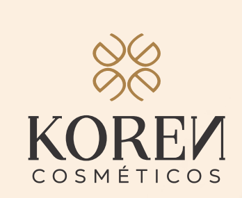

Santa Teresinha
Campo Bom
Uma comunicação construída a partir da identidade da instituição, da relação com seu público e das prioridades do seu momento.
@santateresinhacampobom ↗ INFLOW IA
INFLOW IAKoren Cosméticos × Inflow IA

Reconhecimento.
Consistência.
Confiança.
A Koren chega ao mercado com um portfólio completo de cuidados capilares, desenvolvido para diferentes necessidades, tipos de cabelo e rotinas de tratamento.
Hoje, o catálogo reúne 11 coleções, incluindo soluções para cabelos lisos, cacheados, danificados, ressecados, fragilizados, loiros, controle de frizz, brilho, nutrição e purificação.
A marca também possui um importante território de comunicação em torno da Exosome Biotechnology, apresentada como tecnologia avançada aplicada ao cuidado dos fios.
Mas possuir bons produtos é apenas o começo.
O próximo desafio é fazer o consumidor:
A Koren está iniciando sua entrada no mercado consumidor.
Isso significa que, antes de buscar apenas vendas imediatas, existe uma etapa fundamental:
Uma pessoa dificilmente escolhe uma marca que nunca viu, não conhece e ainda não aprendeu a reconhecer.
Por isso, os primeiros meses serão dedicados a construir:
presença, familiaridade, percepção de qualidade, autoridade e comunidade.
Meses 1, 2 e 3
Nos primeiros 90 dias, o foco principal será:
Nesse momento, trabalharemos principalmente:
Reconhecimento de marca
Alcance
Frequência de exposição
Identidade digital
Conteúdo premium
Apresentação dos produtos
Creators e UGC
Engajamento
Visitas ao perfil
Crescimento de audiência qualificada
O objetivo inicial não será pressionar o consumidor para comprar a qualquer custo.
Antes de vender, precisamos fazer com que ele conheça e queira saber mais sobre a Koren.
Avaliação dos 90 dias
Os dados de conteúdos, públicos, linhas e anúncios serão consolidados para orientar as recomendações do próximo ciclo. Uma eventual continuidade será definida em nova proposta, após avaliação dos resultados.
Reconhecimento. Consistência. Desejo. Confiança.
Construir uma presença digital consistente e profissional.
Criar materiais capazes de valorizar o produto e transmitir o posicionamento da marca.
Levar os conteúdos para consumidores que ainda não conhecem a Koren.
Colocar os produtos nas mãos de pessoas reais e gerar conteúdos mais próximos do consumidor.
Acompanhar comportamento, tráfego, buscas e evolução da marca.
A estratégia contempla aproximadamente:
Cada publicação terá uma função dentro da estratégia.
Não queremos simplesmente ocupar o calendário.
Queremos construir uma comunicação que seja reconhecida como Koren.
A comunicação será distribuída entre diferentes pilares.
Conteúdos que ajudam o consumidor a entender melhor seu cabelo e suas necessidades.
Exemplo
“Seu cabelo precisa de hidratação, nutrição ou reconstrução?”
Apresentação das linhas e soluções da Koren.
O catálogo permite trabalhar diferentes territórios: definição de cachos, hidratação, nutrição, fortalecimento, reparação, controle de frizz e brilho.
Partimos da necessidade do consumidor.
Frizz.
Quebra.
Ressecamento.
Opacidade.
Falta de definição.
Danos químicos.
E mostramos como cada linha se encaixa dentro da rotina de cuidado.
Transformar diferenciais técnicos em uma linguagem simples e interessante para o consumidor.
Textura.
Aplicação.
Modo de uso.
Rotina.
Finalização.
Construção de desejo e identificação com o universo da marca.
Creators, UGC, demonstrações e experiências reais.
Posicionamento, propósito, bastidores, diferenciais e identidade Koren.
Educação
Conteúdo que resolve uma dúvida ou ensina algo relevante.
Produto
Apresentação de uma linha ou solução.
Reel / Vídeo
Aplicação, textura, rotina ou demonstração.
Autoridade
Tecnologia, cuidado capilar ou conteúdo explicativo.
Desejo & Comunidade
Lifestyle, creator, interação, tendência ou campanha.
Essa é uma das bases do projeto.
Não trabalharemos utilizando modelos prontos simplesmente alterando fotografia, texto e cor.
Cada conteúdo será desenvolvido considerando:
produto + mensagem + objetivo + composição + identidade + público + momento da marca.
Queremos construir consistência visual sem transformar todos os conteúdos em cópias uns dos outros.
A pessoa deve reconhecer que um conteúdo pertence à Koren antes mesmo de procurar pelo logo.
A identidade existente da Koren será transformada em uma linguagem própria para o ambiente digital.
O sistema contemplará:
tipografia;
paleta;
tratamento de imagem;
composição;
elementos gráficos;
aplicação dos produtos;
Reels;
Stories;
campanhas;
anúncios;
materiais institucionais.
O objetivo é criar uma comunicação capaz de transmitir:
A proposta contempla aproximadamente:
Os Stories poderão trabalhar:
produtos, perguntas, enquetes, conteúdos educativos, bastidores, creators, reposts, novidades, lançamentos e direcionamento ao site.
Não trabalharemos Stories apenas para “manter uma bolinha ativa”.
Cada sequência deverá possuir uma função.
O consumidor quer ver:
o produto;
a textura;
a aplicação;
o cabelo em movimento;
a rotina;
a experiência.
Por isso, Reels e conteúdos verticais terão papel importante na estratégia.
UGC significa User Generated Content.
Na prática, são conteúdos produzidos com uma linguagem mais natural, mostrando pessoas utilizando e apresentando os produtos.
Um creator pode produzir, por exemplo:
unboxing → aplicação → rotina → textura → experiência → resultado percebido.
Esses materiais podem ser utilizados tanto organicamente quanto em campanhas de mídia.
Um bom creator não precisa possuir centenas de milhares de seguidores.
Quando o objetivo é produção de conteúdo, muitas vezes a capacidade de comunicar e produzir um bom vídeo é mais importante que o tamanho da audiência.
Valores de creators, produtos e fretes são independentes da mensalidade da Inflow e sempre serão submetidos à aprovação prévia da Koren.
Existe uma diferença enorme entre crescer um número e construir uma audiência.
Imagine dois cenários.
Grande parte não possui interesse real em cuidados capilares.
Pouca interação.
Poucas visitas ao site.
Pouca intenção de compra.
Pessoas interessadas em:
beleza;
cabelo;
tratamentos;
cosméticos;
cuidados pessoais.
Elas assistem aos vídeos.
Salvam conteúdos.
Compartilham.
Visitam produtos.
Acompanham lançamentos.
Pesquisam a marca.
Podem se tornar clientes.
Não basearemos o projeto em atalhos artificiais.
Número maior não significa mercado maior.
Eles podem gerar milhares de seguidores interessados apenas no prêmio.
Volume sem qualidade não constrói percepção premium.
Cada campanha precisa cumprir uma função dentro da jornada.
Uma marca nova possui um desafio simples:
Poucas pessoas sabem que ela existe.
Mesmo que produzamos um excelente conteúdo, depender exclusivamente do alcance orgânico tornaria o processo muito mais lento.
A mídia paga permite acelerar esse processo.
Produzimos o conteúdo.
↓
Escolhemos quem queremos atingir.
↓
Definimos quanto investir.
↓
As plataformas distribuem o conteúdo para esse público.
↓
Analisamos o comportamento.
↓
Aprimoramos campanhas e criativos.
Queremos aumentar:
alcance;
frequência;
visualizações;
visitas ao perfil;
engajamento;
seguidores qualificados;
interesse pela marca.
Uma pessoa que vê Koren uma única vez pode esquecer.
Uma pessoa que começa a encontrar Koren repetidamente começa a reconhecer a marca.
As faixas abaixo servem como cenários de planejamento.
Elas não representam promessa de resultado.
| Investimento mensal | Média por dia | Exibições estimadas/mês | Visitas estimadas ao site/mês | Aplicação |
|---|---|---|---|---|
| R$1.000 | ~R$33/dia | 28 mil – 50 mil | 330 – 670 | Referência inicial para operação local |
| R$3.000 | ~R$100/dia | 85 mil – 150 mil | 1.000 – 2.000 | Mínimo recomendado para uma marca nacional |
| R$5.000 | ~R$167/dia | 140 mil – 250 mil | 1.660 – 3.330 | Maior capacidade de alcance e testes |
| R$7.000 | ~R$233/dia | 200 mil – 350 mil | 2.330 – 4.660 | Operação nacional com maior capacidade de distribuição |
Para planejamento, estamos considerando aproximadamente:
CPM entre R$20 e R$35
CPM é o valor pago para cada mil exibições do anúncio.
E:
custo estimado por visita entre R$1,50 e R$3,00.
As faixas de exibições e visitas ilustram objetivos distintos de campanha; não devem ser somadas como resultados simultâneos garantidos para a mesma verba. No ciclo de reconhecimento, a distribuição do orçamento priorizará marca e audiência. Os resultados reais dependerão de criativo, público, concorrência, produto, campanha, região, período e desempenho do site.
Uma exibição significa que um anúncio apareceu uma vez na tela.
Isso não significa necessariamente uma pessoa diferente.
Se a mesma pessoa encontrar Koren três vezes, teremos três exibições.
E isso pode ser positivo.
Queremos que o consumidor deixe de pensar:
“Nunca vi essa marca.”
e passe a pensar:
“Já vi Koren em algum lugar.”
Depois:
“Conheço essa marca.”
Uma empresa local precisa alcançar pessoas dentro de uma região limitada.
Por isso, aproximadamente:
já pode representar um ponto inicial possível para campanhas locais.
A realidade de uma marca nacional é diferente.
A Koren precisa:
atingir diferentes regiões;
testar diferentes públicos;
trabalhar diferentes criativos;
comparar diferentes produtos;
gerar volume suficiente de dados.
Por isso recomendamos:
Esse valor não representa um teto.
Conforme os dados mostrarem oportunidades de crescimento, o orçamento poderá evoluir para:
R$5.000, R$7.000, R$10.000 ou mais, de forma gradual e orientada pelos resultados.
Se determinado conteúdo custa menos para alcançar pessoas;
se determinada linha gera mais interesse;
se determinado público visita mais o site;
se determinado anúncio apresenta melhor desempenho;
é nele que aumentamos nossa capacidade de distribuição.
O conhecimento acumulado permitirá recomendar os próximos passos: públicos prioritários, produtos com maior interesse e oportunidades para campanhas comerciais. A continuidade dependerá de nova contratação.
A Koren possui um portfólio amplo.
Tentar apresentar todas as linhas simultaneamente com a mesma intensidade pode diluir a mensagem.
Por isso, durante o planejamento, definiremos:
Produtos ou linhas que atuarão como principais portas de entrada da marca.
Esses produtos poderão receber maior presença em:
conteúdo;
creators;
anúncios;
campanhas;
demonstrações.
O restante do portfólio continua presente, mas a comunicação ganha prioridade estratégica.
À medida que a Koren começa a ser conhecida, esperamos que mais pessoas também passem a pesquisar pelo nome da marca, produtos e linhas.
Por isso, nossa estratégia contempla acompanhamento da presença digital através de:
Google Analytics;
Google Search Console;
análise inicial de SEO;
pesquisa de palavras-chave;
recomendações para páginas e categorias;
acompanhamento das buscas pela marca.
Como o e-commerce está sendo desenvolvido por outro fornecedor, alterações técnicas serão encaminhadas para o responsável pelo desenvolvimento quando necessárias.
Não queremos apresentar relatórios cheios de números difíceis de interpretar.
Queremos responder perguntas.
| Indicador | O que ele nos diz | |
|---|---|---|
| Alcance | Quantas pessoas diferentes estamos atingindo? | |
| Impressões | Quantas vezes a Koren está aparecendo? | |
| Frequência | Quantas vezes, em média, cada pessoa encontra a marca? | |
| Visualizações | As pessoas estão consumindo nossos vídeos? | |
| Engajamento | O conteúdo desperta interesse? | |
| Compartilhamentos | O conteúdo possui valor suficiente para ser enviado a outras pessoas? | |
| Salvamentos | O consumidor quer consultar aquele conteúdo novamente? | |
| Seguidores | Nossa comunidade está crescendo? | |
| Visitas ao perfil | A comunicação gera curiosidade? | |
| Visitas ao site | Estamos conseguindo levar pessoas para conhecer os produtos? | |
| CTR | Os anúncios despertam vontade de clicar? | |
| CPC | Quanto custa gerar uma visita? | |
| CAC | Quanto custa conquistar um novo cliente? | |
| ROAS | Quanto retorna em vendas para cada real investido em anúncios? |
marca e audiência terão maior peso.
os aprendizados serão consolidados para orientar uma possível próxima etapa.
CAC e ROAS serão analisados quando houver vendas rastreáveis e volume de dados suficiente; não serão os indicadores centrais deste ciclo de reconhecimento.
Planejamento estratégico.
Posicionamento digital.
Estrutura visual.
Definição dos produtos prioritários.
Criação dos canais.
Calendário editorial.
Configuração de mensuração.
Primeiro ciclo de conteúdos.
Primeiras campanhas.
Conteúdo recorrente.
Ampliação de alcance.
Campanhas de reconhecimento.
Apresentação das linhas.
Reels.
Testes de comunicação.
Crescimento da audiência.
UGC.
Creators.
Tecnologia.
Demonstrações.
Problema × solução.
Otimização dos conteúdos.
Remarketing inicial.
Ao final dos primeiros três meses queremos conseguir responder:
Quem está demonstrando interesse pela Koren?
Quais linhas chamam mais atenção?
Quais conteúdos geram maior retenção?
Quais criativos possuem melhor desempenho?
Quais públicos possuem maior afinidade?
Quanto custa apresentar a Koren a novos consumidores?
20 a 22 conteúdos principais
Publicações de segunda a sexta-feira.
Design premium exclusivo
Cada peça desenvolvida especificamente para a Koren.
Direção criativa
Construção e evolução da identidade digital da marca.
Copywriting
Conceitos, títulos, textos, chamadas e legendas.
Reels
Planejamento e edição a partir dos materiais disponibilizados e produzidos.
Stories
Aproximadamente 40 a 60 inserções mensais.
Planejamento e gestão.
Integração da comunicação e das campanhas.
TikTok
Direcionamento estratégico e adaptação de conteúdos quando aplicável.
Meta Ads
Planejamento, gestão e otimização das campanhas.
Creators & UGC
Pesquisa, planejamento, briefing e acompanhamento.
SEO & Google
Acompanhamento estratégico.
Relatório mensal
Resultados traduzidos para decisões.
Reunião estratégica
Revisão dos resultados e planejamento do próximo ciclo.
Canal direto para acompanhamento do projeto.
Na Inflow IA, quem participa do planejamento também acompanha diretamente a execução. A Koren poderá conversar com os responsáveis pela estratégia e pela criação, trazendo dúvidas, referências e ajustes para quem conhece o trabalho.
Mais contexto para criar. O conhecimento sobre os produtos, o público e as prioridades da Koren chega diretamente a quem transforma a estratégia em conteúdo.
Mais clareza para decidir. As recomendações são explicadas por quem acompanha as campanhas e entende os motivos de cada escolha.
Mais agilidade para ajustar. O contato direto facilita alinhamentos e reduz repasses de informação, mantendo a marca próxima de cada etapa do projeto.
A proximidade se traduz em acompanhamento contínuo: reunião estratégica mensal, análise de resultados e canal direto no WhatsApp.
Não enxergamos Instagram, mídia, site e Google como elementos independentes.
Enxergamos um único ecossistema:
↓
↓
↓
↓
↓
↓
E então o ciclo começa novamente, cada vez com mais informação.
Para uma marca que deseja posicionamento premium, não basta que os produtos tenham boa aparência.
Toda a experiência digital precisa sustentar essa percepção.
É por isso que a proposta Koren 90 possui uma frente específica de direção criativa.
Cada peça será criada de forma individual, respeitando o sistema visual da marca, mas explorando composições diferentes.
É construir uma marca visualmente reconhecível.
Cada conta está em um momento diferente, com seu público, seus objetivos e suas prioridades. Por isso, o trabalho precisa considerar a realidade de cada projeto: o que comunicar, como apresentar a marca e qual resultado acompanhar.
Uma comunicação construída a partir da identidade da instituição, da relação com seu público e das prioridades do seu momento.
@santateresinhacampobom ↗No segmento de saúde, clareza, confiança e cuidado com a mensagem orientam o conteúdo. A estratégia acompanha as necessidades e os objetivos do projeto.
@saudeavant ↗Uma marca profissional pede linguagem própria, proximidade e uma apresentação coerente com seu posicionamento e com as pessoas que deseja alcançar.
@karensilvapsi ↗Esses projetos mostram diferentes aplicações do nosso trabalho. A estratégia da Koren será desenvolvida especificamente para sua entrada no mercado consumidor, seu portfólio capilar e seu posicionamento premium.
Diagnóstico próprio, direção criativa exclusiva e conteúdo pensado para a Koren. Durante os 90 dias, as prioridades serão ajustadas conforme os dados da própria marca, com foco em reconhecimento e audiência qualificada.
Investimento total em gestão: R$14.700
Planejamento estratégico
Direção criativa
Social Media
20–22 conteúdos mensais
Design exclusivo
Copywriting
Stories
Reels
Direcionamento TikTok
Criativos publicitários
Gestão Meta Ads
Remarketing
Estratégia de creators
Acompanhamento UGC
SEO estratégico
Analytics
Relatórios
Reuniões
Atendimento direto
A verba de publicidade é paga diretamente às plataformas e não integra a remuneração da Inflow IA.
Ela pode ser aumentada de forma gradual conforme os resultados e aprendizados da operação.
R$2.000 a R$4.000 por ciclo, conforme estratégia e aprovação.
Filmagem presencial, fotógrafo, estúdio, modelos, maquiagem, locação ou outras produções especiais serão previamente orçadas.
Cachês serão negociados individualmente e somente contratados após aprovação.
Não prometemos números artificiais.
Nenhuma agência séria pode garantir antecipadamente:
uma quantidade exata de seguidores;
um número exato de vendas;
uma viralização;
um custo fixo de aquisição;
um alcance exato.
O que podemos garantir é a execução do trabalho contratado:
O desempenho será acompanhado continuamente e as decisões serão orientadas pelos dados gerados pela própria operação.
Queremos terminar conseguindo responder:
Quem é a audiência digital da Koren?
O que ela deseja?
Quais produtos mais despertam interesse?
Quais mensagens funcionam?
Quais conteúdos geram reconhecimento?
Quanto custa alcançar esse consumidor?
Como transformamos esse conhecimento em crescimento?
Durante os próximos 90 dias, nosso objetivo será fazer a Koren começar a ocupar espaço no mercado consumidor através de:
Não queremos criar simplesmente um perfil maior.
Koren Cosméticos × Inflow IA